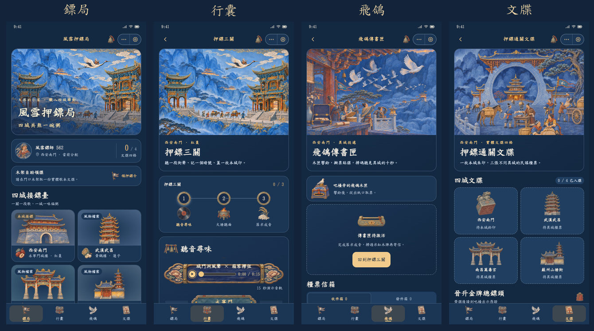

鏢局 · 領令
選「西安南門」，查看永寧門與紅棗，點「揭榜領取押鏢令」。在門店演示時，同步展示木架上的實體歌本文牒。
大冰的小屋 · 四城一碗粥
小程序演示手冊

以西安南門為例。顧客在本城領令、走完三關，再收齊三座異城的民謠糧票，帶著一印三票到吧臺交鏢。

選「西安南門」，查看永寧門與紅棗，點「揭榜領取押鏢令」。在門店演示時，同步展示木架上的實體歌本文牒。
聽街聲，點「模擬到達地標」並保存尋味海報。讀火塘故事，輸入「木吉他」解鎖歌譜；確認添米與蓋印，再模擬掃米缸木牌，啟用飛鴿匣。
選異城，填入本城寄語，附上十秒演示音軌並勾選同意，點「放飛信鴿」。可在發件箱查看剛寄出的糧票。
從收件箱逐張打開武漢、南昌、蘇州的來票，點「模擬掃碼 · 貼入文牒」。四格齊全後出示吧臺核銷碼，輸入店員演示口令 2026，查看「交鏢禮成」。
下方可直接操作。投影時可獨立開啟小程序，在桌面寬度使用右側路演控制臺。